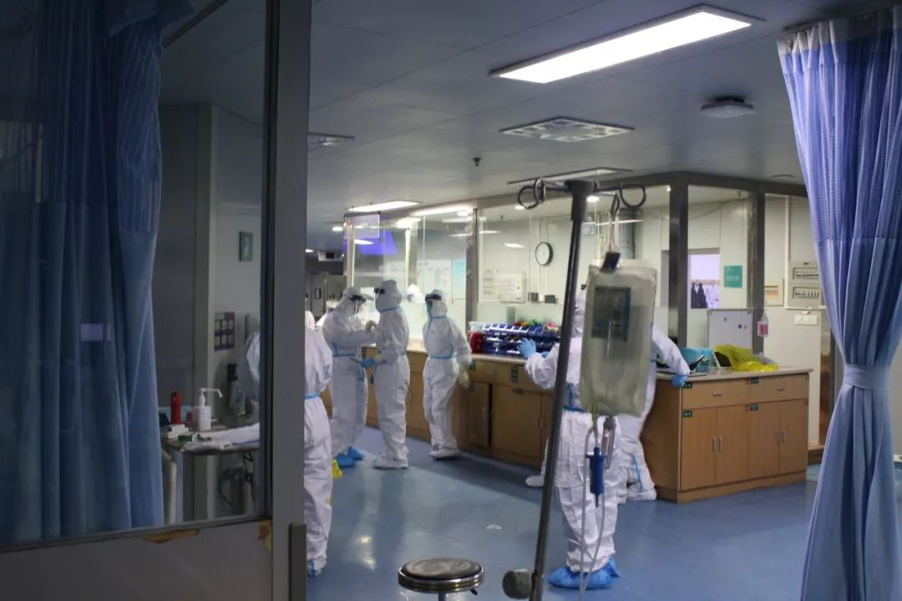
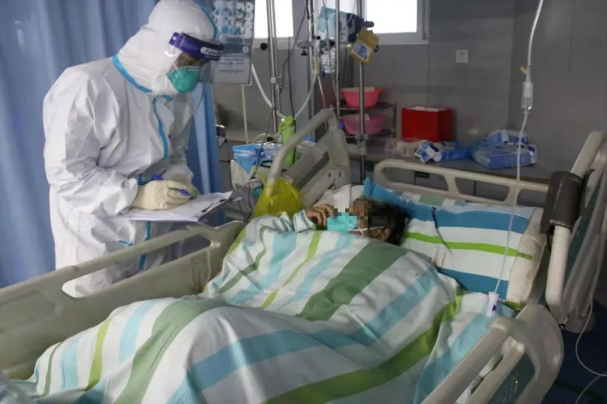

千人医疗队驰援武汉，诊治难度并无想象中可怕，未来最大挑战来自武汉之外
原文链接 备份链接 支援武汉的医护人员已上千，地方900多人，军队450人，随后将再派1600多人。 武汉医护人员身心俱疲，难以应对不断增长的病例和民众的恐慌。 外援的到来，缓解了他们的负担。不少援汉医护人员感到，仅从肺炎诊治难度而 …

我们做好了奋战半年的打算


武汉大学中南医院重症医学科的护理人员。本刊记者/周群峰 摄
1月25日，大年初一，“封城”下的武汉，小雨绵绵，路上人车稀少。但武汉大学中南医院重症医学科（ICU）的医护人员们无暇过年，依旧忙着照顾科室里16名新型冠状病毒感染的肺炎危重症患者。
在该科室一名护士的指导下，《中国新闻周刊》记者花了20多分钟穿上专业的防护装备，包括N95口罩、面屏、头套、手术服、连身式一次性防护服、防护面屏、防护鞋套与两层手套。
刚穿上这套装备时，人有点憋得喘不过气来。旁边的护士说，他们刚开始穿的时候也是这种感觉，过几天就适应了。
护士长马晶解释说，在此次疫情爆发之前，这些装备连重症医学科的护士也不会用。“平常工作时，我们就带个口罩，穿工作服就可以了。以前也会准备这些装备，但只是每年开箱检查一下，看是不是在有效期之内。”
“一个危重患者转出，三四个患者排队进来”
在中南医院ICU病区内，77岁的老太太李阿珍（化名）带着口罩，躺在病床上，看上去，瘦小的身体还是比较虚弱，但是意识很清醒，精神状态还不错。护理人员正在为其整理着被褥。
李阿珍说，1月初，她有些咳嗽、发烧，体温升到38.5℃。因为自己平常很少生病，也没太在意，吃了一个星期的感冒药没见效果，就到附近诊所打了几天吊瓶，仍未退烧，喘气也变得些更加困难。儿女带着她去附近的几家医院救治，都不肯收治。1月20日，李阿珍被家人送到中南医院，经过诊治，这几天病情已趋于稳定，体温也降到了37℃左右。

目前，中南医院正在收治新型冠状病毒感染肺炎危重患者16名，本刊记者正在采访其中一位患者。 拍摄者/高光华
目前，包括李阿珍在内，中南医院重症医学隔离病房里的16名新冠肺炎危重患者全部都是中老年人。护士长马晶告诉《中国新闻周刊》，现在床位非常紧张，危重患者每转出去一个，后面就有三四个人排队进来。
目前，该院重症医学科的医护人员实行三班倒，每次值班时，有十几名护理人员、两三名医生。护理人员除了负责为患者喂药，整理被褥等，还要负责病人的吃喝拉撒。
武汉新冠肺炎疫情爆发后，一个令人振奋的消息就是从中南医院传出的。1月22日，中南医院宣布，他们用移动心肺仪（ECMO）成功救治了一名新型冠状病毒患者，属湖北省首例。
中南医院重症医学科主任彭志勇告诉《中国新闻周刊》，目前，该患者已转入感染科隔离病房，接受进一步治疗。但是，他强调说，ECMO属于抢救性措施，并不适合大面积推广应用。“该技术在此次疫情中，只应用于危重症患者，是在对患者做了很多尝试都无效的情况下，病人在24小时内可能有生命危险时才用到，目的是保证病人不会因缺氧而死，为进一步治疗留出时间。”
该科护士介绍说，针对此次疫情，目前没有特效药，只能对症、支持治疗，“根据患者的血培养、尿培养等结果，来制定治疗方案。”
1月23日，武汉市为应对发热病人无序就医可能带来的交叉感染和疾病传播，开始实行发热病人集中就诊的“7+7”模式。所有体温在37.3度以上的发热病人需先到7家定点的二级公立医院就诊，同时安排了7家三甲医院对口帮扶这7家定点医院。按该模式，中南医院对口帮扶的医院为武汉市第七医院。
中南医院相关负责人告诉《中国新闻周刊》，目前，中南医院已经派出六七名医护人员进入武汉七院帮扶。“7+7”模式实行后，除非急诊的病人，中南医院不再收治普通发热的患者。这样能缓解床位紧张问题。也能减低交叉感染的风险。
一名医护人员称，目前武汉七院有300多张床位，但仍满足不了需求。医护人员也是高危人群，有症状也要及时排查。如果一旦感染后，就会进入专门针对医护人员的病房救治。
比物资紧缺更令人不安的，是医务人员感染
疫情爆发后，医疗物资紧缺，让中南医院重症医学科团队有些担心。
马晶说，“我们的口罩都快弹尽粮绝了，但我还是得必须按时发给护士，全力保障大家的安全。
据介绍，在这里工作，穿上手术服后，必须再穿一身防护服。还必须带两层防护手套，第一层要确保始终不离手，第二层按需要及时更换。这样一套全身装备大约需要200多元，医护人员穿一次大约也需要20～25分钟。穿的时候一定得规范，不能着急，因为稍有不慎，就把自己暴露了。
马晶所在的科室，现在保守估计每天也要用100套防护服。这里的库存能保证用到正月初七左右。有时上级领导来检查工作，都得给他们准备一套。所以现在也在尽力节省，前段时间，有记者要过来采访，“为了节约装备，我也只好婉拒。”
按照规定，专业的防护服、口罩等装备按要求4小时更换一次。马晶要求护士，为减少消耗，工作前要尽量少喝水，否则上一次厕所，就得重新换一次装备。但事实上，在ICU里，护理团队体能消耗很大，又得需要大量补水。
物资短缺也给医护人员带来了恐慌感。马晶称，她现在能做的也只能是让同事尽量省着用。“在新的物资进来之前，我也不知道怎么办。而物资什么时候来，我也不知道。”
马晶的一个同学在武汉市某周边城市的医院上班。几天前，这名同学给马晶发微信说：“我们物资更紧缺，我们几个人不得不共用一套防护装备，而且只能优先提供给管理高度疑似病人的医护人员使用。”
看到这条微信，马晶都要流泪了。“我们有时候，在穿脱这套装备时，操作稍有不慎，都会造成交叉感染，更何况几人共用一套。”
大年初一上午，有朋友给马晶发来春节问候微信时问，医院物资真的像外界说的那么紧缺吗？马晶只回答了两个字“是的”。
在中南医院，重症医学科作为收治危重患者的科室，防护服等物品的供应相对还充足一点。其他临床科室则因物资匮乏，加上患者还未确诊，即便医护人员去医院设备处申请，也不一定能得到。马晶说，设备处要首先确保重症医学科的需要，但实际上院内其他科室的风险也很大，因为那里也有疑似病例。
中南医院一位负责人告诉《中国新闻周刊》，疫情爆发以来，每天都有全国各地的爱心人士和企业来电，咨询如何捐助。院方对这种善举非常感谢，但并非所有捐赠的物资都能用。“医护人员使用的物资，都有严格的国家标准，有些物资即便捐赠过来，医院也未必用得上，还造成资源浪费。”
与工作强度大、医疗物资紧缺相比，医务人员感染才是最让团队不安的因素。目前，已有多家医院爆出医护人员感染的案例。马晶说，虽然医护人员保护措施专业，但是长时间超负荷工作，致使身体抵抗力下降，也容易导致自身感染。
“不要为我担心”
马晶在中南医院ICU已经工作了十余年。科室原共有30名护士，疫情发生后，人手不够，院方从其他病区紧急调配，现在增加到44名。然而，马晶说，紧急调配来的护士，没有ICU科室工作经验，“一些专业的护理工作，还是我们在做。”
疫情爆发之初，马晶每天早上6、7点钟出门上班，晚上10点左右回家。后来，因担心家中老人和孩子的健康，从1月8日起，她就主动自行“隔离”，住进了医院。医院负责订饭，住宿就在值班室。“我们一线的护士，看到我在这，对他们也是一种鼓励，能够让他们更安心地工作。”
长期超负荷的工作，令马晶感到体力透支。科主任彭志勇担心她抵抗力太差，就把她赶回家休息。可是马晶在家里待了2天后，因病房实在缺人手，又重返工作岗位。
彭志勇说，疫情发生以来，该科室每人每天工作差不多12个小时。现在，该院重症医学科很多医护人员不得不实行“白+夜”的上班制度，即一天只休息8小时，其余时间都上班。过去，马晶和同事们也经常这样加班，但现在不同的是，需要穿着闷人的防护服长时间工作。
大年初一早上，马晶给家中7岁的儿子打电话。儿子在电话里哭着说想妈妈，马晶却不知道怎么安慰他。“以前每年春节也常值班，但是像这样有家不能回，还是第一次。同事中，有很多人的家人不在武汉，我一家老小虽都在武汉，却也有家不敢回。”
马晶说，很多同事有时都说自己不想从事医护工作，只想平平安安上个班，但一旦进入工作岗位，就不会有人逃避。现在没人能预测，这场疫情什么时候结束。“参考非典持续的时间，我们也做好了与这次疫情奋战半年的打算。”
采访时，护士程慧拉着记者合影，做出胜利的姿势。她说，“希望这张照片让家人亲友们看到，让他们不要为我担心。”

武汉中南医院护士程慧拉着本刊记者周群峰合影，做出胜利的姿势。拍摄者/高光华
值班编辑：石若萧
推荐阅读
▼


原文链接 备份链接 支援武汉的医护人员已上千，地方900多人，军队450人，随后将再派1600多人。 武汉医护人员身心俱疲，难以应对不断增长的病例和民众的恐慌。 外援的到来，缓解了他们的负担。不少援汉医护人员感到，仅从肺炎诊治难度而 …
原文链接 备份链接 医疗防护资源不足是常态，各地资源调配需平衡，“灯下黑”区域渐次光亮，但少数地区的疫情宣传依旧不到位 外地务工返乡者最担忧的问题是年后经济收入断流、地域歧视，担心节后可能无法返工 本文首发于南方人物周刊 文 | 本刊记 …
原文链接 备份链接 特约撰稿 李梦琪 本报记者 郭阳琛 石英婧 上海报道 “我比很多同事都幸运，除夕是在家过的。”已经在抗击疫情一线连续奋战了二十多天，除夕夜能和家人在一起度过让武汉市肺科医院隔离病区护士吴青（化名）格外欣慰。 由于武汉疫 …
原文链接 备份链接 武汉抗“疫”27日考：追忆那些被贻误的宝贵时机 2020-01-26 20:28 作者：张家振 来源：中国经营网 本报记者 张家振 武汉报道 （武汉抗“疫”一线的逆行者。） 1月24日，除夕夜。39岁的张琴（化名）和丈 …
原文链接 备份链接 武汉正在该市蔡甸区职工疗养院，紧急设计建设一个有1000个床位的临时医院，用于集中收治新型冠状病毒肺炎患者。临时医院计划在2月3日前投入使用。 这是学“小汤山模式”。2003年，北京7天建成小汤山医院，接收680名 …